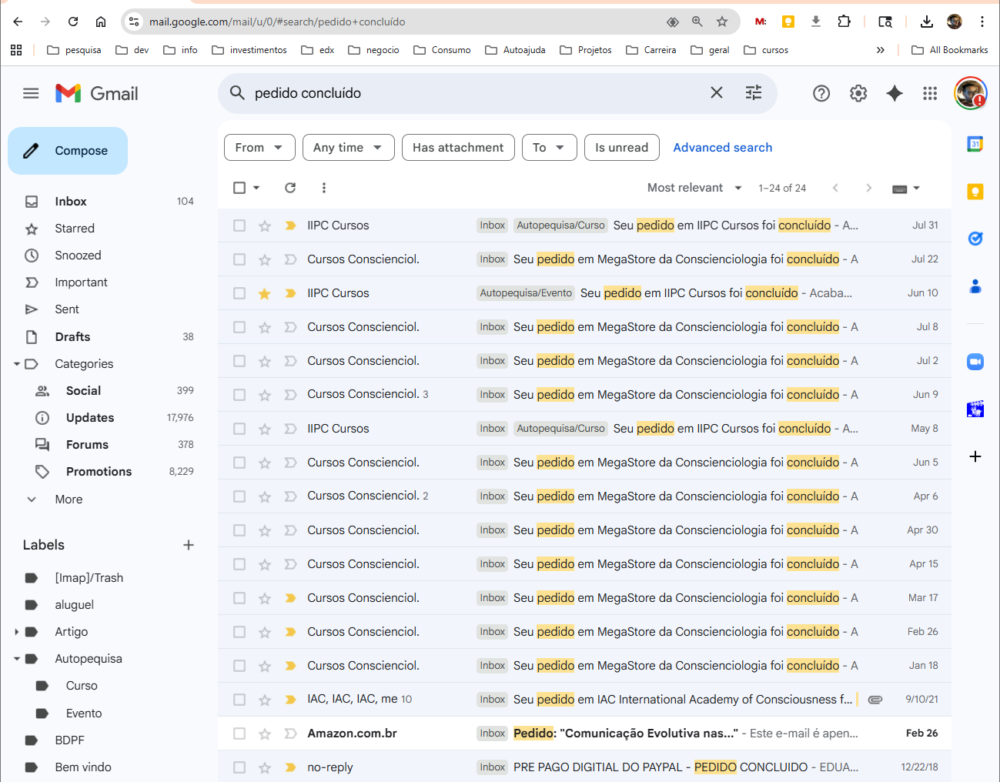

![]()
{kind=link}
{kind=link}
{kind=link}
{kind=link}
{kind=link}
{kind=link}
{kind=link}
{kind=link}
{kind=link}
{kind=link}
{kind=link}
{kind=link}
{kind=link}
timeline
title Janeiro de 2025
12/1/2025 : Chegada à Foz do Iguaçu
17/1/2025 : Primeira visita ao CEAC
18/1/2025 : Compra de curso de entrada TPC
23/1/2025 : Compra do Passaporte Dinâmicas Parapsíquicas anual
1 Introdução
Este relatório representa a autopesquisa realizada pelo autor durante o ano de 2025.
| Ano | URL | DOI |
|---|---|---|
| 2025 | autopesquisa-voluntariado-relatorio-2025 | 10.5281/zenodo.18615320 |
| 2026 | autopesquisa-relatorio-2026 | - |
1.1 Justificativa
A motivação deste trabalho é diminuir a fricção de ter uma Autopesquisa ativa.
Sem registro não há autopesquisa. Utilizar um instrumento de registro que seja confortável para o pesquisador é essencial para a manutenção da pesquisa.
Este relatório tem o propósito de dar o meu primeiro passo na direção de ter uma autopesquisa em execução, estimulando os seguintes fluxos:
- Escolher, aplicar e avaliar técnica.
- Criar planilhas e registros diversos.
- Descobrir tecnologias de editoração, testar, avaliar e escolher quais utilizar.
- Entender o que é Autopesquisa e como realizá-la.
- Publicar e obter feedbacks para aprimorar.
1.2 Feedback
Feedback
No canto superior direito é possível realizar anotações e enviar feedback, sua colaboração é bem vinda!
1.3 Projetos de pesquisa
Agrupei as ações e iniciativas de autopesquisa, realizadas ao longo do ano, em 3 categorias a seguir:
- Qualificação da Intenção (ver Seção 2)
-
Aplicação de uma técnica de Qualificação da intenção chamada de técnica da anotação assertiva.
- Tecnologias para Editoração (ver Seção 3)
-
Exploração e desenvolvimento das tecnologias necessárias para realizar a autopesquisa, incluindo a aquisição dos dados, gestão dos arquivos e publicação da pesquisa.
- Autopesquisa (ver Seção 4)
-
Pesquisa do referencial teórico, planejamento e análise dos dados.
1.4 Perguntas da Pesquisa
Esta pesquisa visa responder às seguintes perguntas na Tabela 2.
| ID | Projeto | Pergunta de pesquisa | Resultado esperado |
|---|---|---|---|
| RQ1 | Qualificação da Intenção | Como seria um exemplo de registro de situações de anotação assertiva? | Linguagem do domínio, Arquivo de exemplo |
| RQ2 | Editoração | Quais as tecnologias de ponta na área de Open Science? | Lista de tecnologias |
| RQ3 | Editoração | Quais softwares utilizar para redigir e publicar a autopesquisa? | Software, Avaliação |
| RQ4 | Editoração | Quais informações incluir para testar a ferramenta com autopesquisa? | Identificação de dados relevantes |
| RQ5 | Editoração | Como extrair os dados relevantes de cada fonte? | Procedimento |
| RQ6 | Autopesquisa | O que é Autopesquisa? | Definição |
| RQ7 | Autopesquisa | Como iniciar a autopesquisa? | Definição das etapas iniciais |
1.5 Hipóteses
| ID | Pergunta | Hipótese (testável) | Como verificar (indicador/critério) |
|---|---|---|---|
| H1 | RQ1 | Formulário web pode ser utilizado para registrar situações e análises | Formulário WEB, Boa experiência de utilização |
| H2 | RQ1 | Utilização de software de Roteiros de Filme/Teatro para registrar as situações | Roteiro escrito, Boa experiência de utilização |
| H3 | RQ1 | Uma Linguagem Específica de Domínio pode ser utilizada para registrar as situações | Situações escritas, Boa experiência |
| H4 | RQ2 | Encontrar as tecnologias através de prompts no ChatGPT e Grok | Avaliar manualmente |
| H5 | RQ3 | É possível utilizar a mesma tecnologia para escrita de artigos científicos e livros | Avaliação |
| H6 | RQ4 | Escolher um dado de série para geração de gráficos | Dataset, Gráfico |
| H7 | RQ4 | Buscar no ICNET, Lojas, E-mail, WhatsAppp e outras fontes quais dados estão disponíveis | Lista de fontes, seleção dos dados |
| H8 | RQ5 | Criar uma extensão para o Google Chrome para extrair os dados do ICNET | Extensão, Datasets |
| H9 | RQ7 | Pesquisa bibliográfica revelará como estruturar a autopesquisa | Tópicos associados aos recursos empregados; Referencial teórico dos métodos. |
1.6 Organização do relatório
O restante do relatório é organizado da seguinte forma:
- Projeto Qualificação da intenção
-
Buscando encontrar as respostas das perguntas das dúvidas deste projeto.
- Projeto Tecnologias para Editoração
-
Buscando encontrar as respostas das perguntas das dúvidas deste projeto.
- Projeto Autopesquisa
-
Buscando encontrar as respostas das perguntas das dúvidas deste projeto.
- Dados coletados
-
Apresentação das dados coletados sem análise.
- Avaliação
-
Avaliação dos dados e investigações dos projetos.
- Conclusão
-
Descobertas reveladas sobre minha consciência através da autopesquisa.
- Perspectivas Futuras
-
Melhorias para edições futuras.
- Software
-
Descrição dos softwares utilizados no relatório.
- Objetivos e metas
-
Objetivos e metas pessoais.
2 Projeto Qualificação da intenção
Eu iniciei minha autopesquisa através da leitura do livro “Intenção: Manifestação Atributológica da Consciência”. Eu me propus a realizar a técnica da anotação assertiva, Gesing (2017) p. 72:
Técnica. A técnica da anotação assertiva se assenta no registro escrito da intenção real daquele momento evolutivo.
Metodologia. A pessoa deve estar ligada, antenada o tempo todo a tudo que acontece com ela, procurando anotar em cima do lance, valorizando tudo nos mínimos detalhes, a fim de ir ampliando gradativamente a visão de conjunto (cosmovisão), autolucidez e autodiscernimento sobre as autopensenizações.
Questionologia. Se perguntar: por que fiz isto? Por que fiz aquilo? Por que agi desta forma? Por que reagi assim desta maneira? Por que aconteceu isto? O que está por trás – subjacente? Por que com essa pessoa (consciência)? Por que neste local? Por que neste instante (horário)? O porquê da sincronicidade? E assim por diante, até conseguir entender, compreender, assimilar o porquê das causas, efeitos, consequências, circunstâncias, fatos e parafatos e, conseguir fazer a auditoria da autopensenidade, objetivando aumentar o nível de autolucidez e a vivência da autocosmoeticidade.
A realização desta técnica pode ser compreendida em 4 etapas:
- O registro de tudo, o tempo todo, nos mínimos detalhes
- Elaborar os questionamentos das situações
- Responder aos questionamentos elaborados
- Identificar e classificar a cosmovisão e o autodiscernimento sobre as autopensenizações ANTES e DEPOIS das respostas.
2.1 O registro de tudo, o tempo todo, nos mínimos detalhes
O registro de tudo, o tempo todo, nos mínimos detalhes é uma atividade muito minuciosa, exaustiva e demanda muito tempo para realização.
Para compreender melhor, segue exemplo de situação que necessita registro e análise em um dia hipotético (Figura 1). As situações de interesse estão marcadas de verde.
2.2 RQ1 - Como seria um exemplo de registro de situações de anotação assertiva?
2.2.1 Hipótese 1 - Formulário web pode ser utilizado para registrar situações e análises
Na investigação dessa hipótese eu mapiei os conceitos conforme a Tabela 4.
| Termo | Significado |
|---|---|
| Situação | O evento que temos interesse em observar. Ex: Deitado na cama. |
| Técnica | O nome da técnica empregada. Ex: anotação assertiva. |
| Análise | O resultado da avaliação conforme a técnica empregada. |
| Registro | Uma entrada de conteúdo salvo no computador, seja em arquivo ou banco dados. Ex: Uma linha em um arquivo de planilha. |
Estes são possíveis campos necessários para registrar uma Situação e entre parênteses as possíveis automações que um formulário poderia implementar:
- Data (Automático)
- Horário (Automático)
- Local aonde estou (baseado na localização do celular)
- Pessoas (baseada no histórico de convívio e localização)
- Seleção de sentimentos
- Pensene
- Questionário personalizado
- Sinalética
- Outros
Devido a complexidade de uma Situação, optei por prototipar um formulário de uma etapa de Análise (ver Figura 2), que iria registrar os trafores e trafares apresentados na situação e atribuir uma nota.1
Criei o código do formulário utilizando inteligência artificial e verifiquei que seria possível a tecnologia para este propósito. Eu abortei os esforços do formulário e mudei o foco para os registros das situações.
2.2.2 Hipótese 2 - Utilização de software de Roteiros para registrar as situações
Baseado na ideia de que um roteiro de filme ou cinema descreve todas as cenas, diálogos e personagens investiguei a possibilidade de utilizar roteiro para realizar os registros das situações.
Os roteiros possuem diversas terminologias da área (consultar Trottier (2014) para mais detalhes) e formatação padronizada. Por exemplo, toda Cena inicia com cabeçalho contendo as palavras INT/EXT (interior ou exterior) Nome da Cenca e DIA/NOITE. Essas informações são úteis para a gravação e orçamento do filme.
Para registrar as situações como um roteiro seria necessário traduzir os conceitos das situações e redigir aplicando os estilos de cinema (ver Tabela 6). Por exemplo, o que eu ou alguém falou poderia ser registrado em formatação de diálogo.2 Enquanto o que eu pensei poderia ser registrado como a voz do Narrador.
| Termo | Significado |
|---|---|
| Cena | A situação que temos interesse em observar. |
| Sequência | Um conjunto de cenas no mesmo local e geralmente com os mesmos personagens. |
| Cenário | Local aonde ocorre a situação |
| Personagem | Pessoa envolvida na cena |
| Diálogo | As palavras que fora proferidas |
| Narração | O pensamento que tive durante a situação |
As Figura 3 e Figura 4 demonstram a tentativa de escrever uma situação no formato de roteiro, utilizando os softwares “KIT Scenarist: Free Screenwriting Software” (s.d.) e “Story Architect (STARC)” (s.d.).

Nota
A utilização dos softwares de roteiro para registrar as situações não se demonstrou viável devido a:
- Mapeamentos estranhos de conceitos e formatação
- Necessidade de compreender a formatação para extrair o significado
2.2.3 Hipótese 3 - Uma Linguagem Específica de Domínio pode ser utilizada para registrar as situações
Uma linguagem específica de domínio (DSL) facilita o processamento das informações inseridas por um computador. Caso as situações estivessem registradas nesse formato seria possível consultar:
- Quais as situações com pensenidade nosográfica que tive nos últimos 15 dias em casa?
- Quais as situações com uma sinalética específica?
| Termo | Significado |
|---|---|
| cena | A situação que temos interesse em observar. |
| sequência | Um conjunto de cenas no mesmo local e geralmente com os mesmos personagens. |
| Atributos | Informações inseridas após o título da cena, detalhes sobre a cena |
| Herança | Os atributos da sequência são compartilhados com as cenas internas. Ex: em |
| tarefa | Tarefa que está sendo realizada |
| dinâmca | Representa uma dinâmica parapsiquica |
| campo | Participação de um campo, na dinâmica |
| registro | Indica que estou escrevendo ou organizando o texto do registro |
| pen | Pensamento |
| sinal | Sinalética |
| fluxo | Representado que estou trabalhando no fluxo, concentrado na última tarefa |
| comida,jantar | Cena comendo |
.antes{} |
Cria uma cena imediatamente antes a anterior, facilita adição de registro para identificar casualidade |
| com, quem, de | Atributo. Pessoa envolvida na situação/cena |
| local, em | Atributo. Local onde ocorre a situação |
| inicio | Atributo. Indicando hora de início da cena |
| fim | Atributo. Indicando hora do término da cena |
A utilização de uma DSL permite um mapeamento mais fácil dos conceitos (ver Tabela 6), e a escrita dos dados de forma estrutura e mais rápida.
Um exemplo de registro utilizando uma DSL (ainda não implementada) pode ser visto na Figura 5, que foi redigida no editor “Obsidian” (s.d.). Através do registro podemos extrair as seguintes informações:
- O nome do arquivo indica a data que ocorreu as situações (20/03/2025).
- Cada cena possui um título que representa a situação
- Foram realçadas 12 cenas
- A primeira cena (título: café da manhã) iniciou às 7.15. As temáticas aboradas durante esta situação foram ‘Juiz’ e ‘investigação do 8 de Janeiro’. Também estavam na cena as pesssoas representadas por
mamaeepaty. - Em seguida há um registro de uma sequência de cenas que ocorreram na academia, que iniciou às 7:50 e terminou às 9:00.
- Na cena número 2, empréstimo da bandana, a pessoa envolvida está sendo representada por
isa_academia - A cena número 3 se comporta como uma sequencia, agrupando várias cenas internas. Todas as cenas 3, 4 e 5 foram com a pessoa representada por
academia_branca). - Vários pensamentos foram registrados com a diretriz
pen(...) - Na cena 6, temos uma cena com a utilização do aplicativo
tinder, iniciada em 11:10. E houve o registro de uma sinalética denominadacostas_ativacao. - O editor de texto permite contrair as cenas, por exemplo: as cenas 7, 9 e 11. As cenas contraídas por ser identificadas pelo simbolo
>no início da linha e...no final da linha. Se clicarmos no simbolo>o conteúdo da cena será expandido, como a cena 3 (está sendo exibido todo o conteúdo dela). - acima da cena 6 há uma outra cena com a diretriz
msg(...)indicando o recebimento e leitura de uma mensagem recebida da pessoa representada porfatima.
Na Figura 6 temos o registro do dia seguinte.

A escrita do registro utilizando uma DSL é rápida e autoexplicativa. A experiência foi muito mais agradável. Contudo esse registro foi apenas uma simulação.
2.2.3.1 Desafios técnicos para implementação da DSL
A implementação de DSL real exige mais alguns desafios tecnicos e de semântica.
- O significado das variáveis podem depender da data do registro
-
Se um registro contém
em: casaisto significa que ocorreu na minha casa. Mas se eu me mudei, provavelmente representa a nova casa. - Privacidade
-
Podemos querer aplicar privacidade em algumas cenas ou pensamentos. Seria necessário criar um mecanismo para criptografar o conteúdo destas seções antes de salvar no repositório de sistema de arquivos. E possibilitar gerar relatório ofuscando estas seções.
- Identificação das cenas
-
Idealmente cada cena deveria ter uma identificação única e gerada automaticamente, sem afetar a legibilidade do registro. Pensei em utilizar a tecnologia RDF (“RDF: Resource Description Framework (RDF)” (s.d.)) para possibilitar a identificação única.
- Análise separada e referenciando as cenas
-
As análises não estão no arquivo do registro. Embora uma análise poderia ser inserida na DSL, existem técnicas que utilizam como base várias situações então precisam ficar separadas. O padrão RDF (“RDF: Resource Description Framework (RDF)” (s.d.)) permitiria a associação entre a análise d atécnica e as situações abordadas. Este mesma tecnologia poderia ser utilizada para identificar os conteúdos para armazenamento histórico na HOLOMEMÓRIA.
- Implementação da DSL com a linguagem de programação Ruby
-
A implementação da DSL demanda conhecimento técnico especializado. Em específico a resolução do escopo das variáveis na linguagem.
- Sentimento de restrição pensênica
-
Quando eu iniciei redigir as situações através de uma DSL eu sentia que havia restrições na forma de pensar. Eu trabalho com instruções para o computador, eu não quis permanecer com o mesmo holopense aplicado ao registros de autopesquisa conscienciológico.
Posteriormente criei um diagrama para representar visualmente os registros e análises (ver Figura 7) utilizando a ferramenta “PlantUML” (s.d.).
Os passos seguintes seriam utilizar um banco de dados não relacional para importar os registros.
Abortei o projeto
Abortei o projeto porque estava demandando muito esforço de implementação.
Recomendação para seguir investigando outra hipótese:
- Redigir registros com Subtitulamento e Apostilhamento do Texto
Para conhecer a técnica de Apostilhamento consultar Nader (2018), e “TÉCNICA DO APOSTILHAMENTO” (2021).
Redigir registros Markdown+Attributes. Ver no “Pandoc User’s Guide” (s.d.): header_attributes, extension-inline_code_attributes, link_attributes, bracketed_spans, attributes.
Utilizar inteligência artificial para processar os registros e extrair informações.
3 Projeto Tecnologias para Editoração
O foco do projeto de Editoração é investigar, identificar e testar as ferramentas que pretendo utilizar para minha autopesquisa.
3.1 RQ2 - Quais as tecnologias de ponta na área de Open Science?
Como a Conscienciologia se posiciona como uma ciência, optei por buscar o que há de mais moderno na Ciência.
3.1.1 Hipótese 4 - Encontrar as tecnologias através de prompts no ChatGPT e Grok
Através de prompts realizados no chatgpt obtemos os seguintes resultados relevantes:
Nota
- Open Science Framework (OSF) — gestão de projeto, colaboração, compartilhamento e pré-registro. (Center for Open Science)
- Zenodo — repositório aberto para dados/software/publicações com DOI. (Zenodo)
- Dataverse — software open source para repositórios de dados de pesquisa. (Dataverse)
- Galaxy — plataforma aberta para análises científicas reprodutíveis por workflow (muito forte em bioinfo). (Galaxy Project)
- Jupyter Notebook / JupyterLab — notebooks reprodutíveis (código + narrativa + resultado).
- Quarto — publicação científica reprodutível (HTML/PDF/Word) com notebooks.
- RStudio + R Markdown — pipeline reprodutível para análise e relatório científico.
- Git — controle de versão rastreável para transparência metodológica.
- GitHub — colaboração aberta, revisão, issues e integração com publicação de artefatos.
- GitLab — alternativa forte ao GitHub com CI/CD integrado para workflows científicos.
Através de prompts realizados no grok obtemos os seguintes resultados relevantes:
Nota
Plataformas de Ciência Aberta + IA Integrada:
- OSF (Open Science Framework) + extensões como DataPipe, ACORN
- Zenodo + GitHub + Hugging Face como trio central para compartilhar modelos, datasets e código
- JupyterLab + Jupyter Book + Quarto + Hex + Deepnote → notebooks executáveis e publicáveis
- EOSC (European Open Science Cloud), ARDC (Austrália), LA Referencia, SciELO, Redalyc evoluindo com APIs e IA
- OpenAlex (sucessor do Microsoft Academic) como base de dados bibliométrica aberta e gratuita
Reprodutibilidade e Verificação Automatizada:
- Ferramentas de reproducible workflows: Snakemake, Nextflow, Prefect, Dagster
- Guix, Nix, Conda-lock, Docker + Singularity/Apptainer para ambientes 100% reprodutíveis
- Verificação automática de resultados com SciUnit, ** Popper, ReproZip**
- Plataformas como Code Ocean, Whole Tale, Renku
Blockchain, Verifiable Credentials e Prova de Autoria:
- Uso crescente de decentralized science (DeSci): Molecule, VitaDAO, AthenaDAO, Opscientia
- NFTs de dados científicos, IP-NFTs, verifiable compute (zero-knowledge proofs para rodar experimentos confidenciais mas verificáveis)
- DID (Decentralized Identifiers) + Verifiable Credentials para ORCID 2.0, currículos verificáveis e contribuição em papers
Dados Abertos Massivos + FAIR-by-Design:
- Hugging Face Datasets + Kaggle + Open Data Commons
- Dryad, Figshare, Mendeley Data, Dataverse
- Repositórios disciplinares com curadoria + IA: Materials Project, PDB, UniProt, Zenodo + AI metadata enrichment
Ferramentas de Escrita e Publicação Científica Assistidas por IA:
- Overleaf + AI plugins, Paperpal, Trinka, Writefull, Jenni AI, Scholarcy
- Ambientes LaTeX + IA nativa: Prism (OpenAI), Typeset, SciSpace
- Pré-prints com revisão aberta: PREreview, Rapid Reviews, Review Commons
3.2 RQ3 - Quais softwares utilizar para redigir e publicar a autopesquisa?
3.2.1 Hipótese 5 - É possível utilizar a mesma tecnologia para escrita de artigos científicos e livros
Foquei meus esforços para avaliar as tecnologias relacionadas editoração de pesquisas com reprodutibilidade, para possibilitar o processamentos de dados e geração de gráficos.
Após avaliação, adotei as seguintes ferramentas para utilização na autopesquisa, que também pode ser utilização para editoração de livros:
| Áreas | Ferramentas |
|---|---|
| Editoração | RStudio + Quarto. |
| Gestão de arquivos e publicação | Git + Github (GitHub, Inc. (n.d.)). |
| Armazenamento para prosperidade | Zenodo (ver Seção 9.7) |
Nota
Embora não utilizada, outra ferramenta que vale mencionar é a Open Science Framework (OSF). Ela tem o propósito de organizar todas as etapas de pesquisa para uma ciência aberta:
3.3 RQ4 - Quais informações incluir para testar a ferramenta com autopesquisa?
3.3.1 Hipótese 6 - Escolher dados em série para geração de gráficos
Para testar a geração de gráficos em série, é necessário coletar o valor da variável ao longo do tempo.
Para autopesquisa, uma das variáveis escolhida foi o peso, que já estava sendo monitorada.
3.3.1.1 Datasets
Para a criação do dataset utilizei o aplicativo Track & Graph (ver Seção 9.3) para registrar o meu peso ao longo do ano.
O aplicativo tem a opção de exportar os dados da série para uma planilha.
3.3.1.2 Gráfico
O RStudio possui funcionalidades para geração de gráficos, sendo necessário elaborar o código para o processamento dos dados e renderização do gráfico.
Utilizei a Inteligência Artificial para gerar o código e personalizar a rendenrização do gráfico de acordo com minha preferência (ver Figura 16).
3.3.2 Hipótese 7 - Buscar no ICNET, Lojas, E-mail, WhatsAppp e outras fontes quais dados estão disponíveis
3.3.2.1 Lista de fontes
| Fonte | URL |
|---|---|
| ICNET | https://icnet.conscienciologia.org.br/ |
| Megastore | https://store.conscienciologia.org.br/my-account/encomendas/ |
| IIPC Loja | https://cursosonline.iipc.org/ |
| https://gmail.com/ | |
| Calendário | https://calendar.google.com/calendar/u/0/r |
| https://web.whatsapp.com/ | |
| Planilha Ortopensenologia | |
| Registro pessoal |
3.3.2.1.1 ICnet
O Sistema ICnet é um pacote de soluções de software que permite a gestão integrada de várias áreas das Instituições Conscienciocêntricas, UNICIN (2025):
- Voluntariado.
- Eventos.
- Gestão financeira (receitas e despesas) e contábil.
- Ecommerce.
- Dinâmicas parapsíquicas.
- Laboratórios.
- Hospedagem em Campus.
- Gescons.
- Gerenciamento de Ensino a Distância.
- Marketing Digital.
Através de uma conta com permissões admnistrativas de uma IC é possível acessar os dados cadastrados no sistema.
Nota
Algumas ICs não utilizam o sistema do ICNET e utilizam soluções próprias, como é o caso da OIC.
3.3.2.1.2 E-mail
 O E-mail é uma rica fonte de informações, pois recebemos confirmações de compras no e-mail.
3.3.2.1.3 Calendário
A agenda de compromissos, quando bem organizada, é um recurso valioso para consultar eventos anteriores (ver Figura 8).
3.3.2.1.4 WhatsApp
Alguns eventos podem ser pesquisados através do WhatsApp (Figura 9), em diálogos ou grupos criados.
3.3.2.2 Seleção dos dados
| Dado | Fontes |
|---|---|
| Voluntariado | ICNET, WhatsApp |
| Eventos | ICNET, E-mail, WhatsApp, Megastore |
| Cursos de Campo | ICNET, E-mail, WhatsApp, IIPC Loja |
| Atividades do Voluntariado | E-mail, WhatsApp |
| Dinâmicas3 | E-mail, Planilhas, Calendário |
| Laboratórios | ICNET, WhatsApp, Calendário |
| Compras | E-mail, Registro pessoal |
3.4 RQ5 - Como extrair os dados relevantes de cada fonte?
3.4.1 Hipótese 8 - Criar uma extensão para o Google Chrome para extrair os dados do ICNET
Ao longo do ano eu já havia criado uma extensão para o Google Chrome (ver Seção 9.1). Essa extensão adiciona uma funcionalidade para gerar diagramas das equipes cadastradas no ICNET (ver Figura 19).
Uma vez que a extensão já estava criada e publicada, adicionar uma nova funcionalidade é mais simples.
Eu adicionei uma nova funcionalidade à extensão Cosmoware de extração de dados do ICNET criando datasets com nomes e estrutura padronizados. Exemplo de dataset extraído: csv/icnet-ic-pessoa_fisica_geral_historico-20260122-102745.csv
Nota
Para acessar os módulo de gestão do ICNET é necessário logar com uma conta que possua as credenciais com permissões apropriadas em cada IC. Para exportar os dados é necessário instalar a extensão Cosmoware que criei.
A seguir estão apresentados os dados diponíveis no ICNET.
3.4.1.1 Voluntariado
A Figura 10 apresenta a tela de Voluntariado (para o voluntário Eduardo de Santana Medeiros) na IC Juriscons. Nela podemos verificar que “Eduardo de Santana Medeiros” está ativo no voluntariado (nenhuma data de saída), que está lotado na Sede da JURISCONS (em Foz do Iguaçu), está vinculado através do organograma da instituição em Colegiado Administrativo \ Relações Institucionais com função de Membro e iniciou formalmente o voluntariado em 11/06/2025.
No entanto os dados inseridos no ICNET pelos voluntários demonstraram não ser confiáveis. Na Figura 11 é apresentado dois erros de registro realizados no cadastro da ISIC (Função e Data de Início). O cadastro do voluntariado da Editares está correto.
3.4.1.2 Participação em equipes
A tela de Participação em Equipe na Figura 12 lista em quais equipes o voluntario(a) participou. Este foi o dado menos disponível, demonstrando que as ICs não tem o hábito de cadastrar esta informação. Participei em equipes de muitos eventos, que não estão cadastrados.
3.4.1.3 Histórico de atividades
A Figura 13 apresenta o histórico das atividades registradas no sistema. Os eventos listados não são indicativos de presença, apenas de compra.
A coluna “Data Início” indica a data registrada de início associada para o evento, que não necessariamente coincide com a data de início propriamente do evento. Por exemplo, a Figura 14 indica datas que eu não estava presente na Conscienciologia.
3.4.1.4 Laboratórios
A consultado dos dados dos Laboratórios (ver Figura 15) exige uma conta com credenciais do CEAC, que não possuo. Solicitei à recepção me enviar um screenshot e copiar os dados para mim.
3.4.1.5 Cursos de Campo
Inexiste uma fonte de listagem de cursos de campo. É possível encontrá-los em flyers no WhatsApp.
4 Projeto Autopesquisa
Este projeto consiste na compreensão do que é Autopesquisa e materializá-la.
Perguntas de Pesquisa do projeto:
- O que é Autopesquisa?
- Como iniciar a Autopesquisa?
4.1 RQ6 - O que é Autopesquisa?
A autopesquisa é o estudo de si mesmo com todas as conseqüências evolutivas daí advindas, onde o pesquisador, homem ou mulher, é, ao mesmo tempo, o objeto, o experimentador, o sujeito, a autocobaia voluntária e o campo de pesquisa, sendo, em tese, sempre evolutivo e cosmoético. – Vieira (2004), p. 1099.
A autopesquisa é o estudo ou pesquisa da própria consciência, por si e de si mesma, com 1% de teoria e 99% de prática, utilizando-se de técnicas e instrumentos disponíveis no microuniverso consciencial e no Cosmos, no qual é observadora, investigadora, cobaia, agente e participante dos próprios experimentos visando a autevolução. – Kauati (2022)
4.2 RQ7 - Como iniciar a autopesquisa?
4.2.1 H9 - Pesquisa bibliográfica revelará como estruturar a autopesquisa
4.2.1.1 Como iniciar o processo de autopesquisa
Em Kauati (2024), cap. 7, é listado 5 fases para realização da autopesquisa:
- Escolha do tema.
- Delimitação da autopesquisa
- Pesquisa bibliográfica.
- Experimentação.
- Análise.
Kauati (2024) sugere escolher uma das seguintes alternativas para inciar a autopesquisa:
- Identificação de um mal estar
- Definir o que deseja alcançar na vida
- De acordo com a necessidade mais importante
- Definir um tema simples, que seja motivador
4.2.1.2 Temas
Nas sessões seguintes investigo as 4 alternativas apresentadas na seção anterior.
4.2.1.2.1 Identificação de um mal estar
Avaliação de tema
No momento não tenho um mal estar que desejo enfrentar.
4.2.1.2.2 Definir o que deseja alcançar na vida
Avaliação de tema
Inicialmente fui pesquisar por técnicas para aplicar na elaboração de objetivos em referências bibliográficas.
A tentativa de escrita de objetivos utilizando a técnica OKRs (Objectives and Key Results) descrita em Doerr (2018) não apresentou resultado satisfatório. O processo é voltado para objetivos empresariais e transpor a técnica para escrita de propósito geral de vida foi frustrante.
Considerei uma abordagem diferente para os objetivos, inspirada por Borges (2025), baseado na Eitologia: avaliar as áreas da vida e classificá-las em Deficiente, Suficiente e Proficiente e dar atenção ao que estiver Carente, transformando-as em Suficiente, e posteriormente qualificando-as para Proficiente.
Classifiquei como não prioritário o emprego de técnica específica para escrita de objetivos, abortando leituras e pesquisa nessa temática.
Elaborei os Objetivos na Seção 10.2.
4.2.1.2.3 De acordo com a necessidade mais importante
Avaliação de tema
Este é o levantamento das metas e objetivos mais importantes:
- Vir para Foz do Iguaçu e estudar a Conscienciologia
- Eu cheguei em Foz do Iguaçu em Janeiro e iniciei o curso de entrada em Fevereiro.
- Estar ápito e na lista de espera para realizar curso de docência através da Reaprendia em 2026
- Os pré-requisitos são: concluído um curso de entrada, realizado curso de campo como ECP2 ou Imerssão Projecioterápica, 6 meses de voluntariado, passar em prova de admissão e entrevista.
- Autopesquisa em execução. Registro diversos e análise incipiente
-
O propósito é ter o processo de autopesquisa iniciado, com registros e análise de qualquer aspectos.
- Peso em monitoramento com medições constantes
-
Cumprir as metas requer esforço e força de vontade. Para o ano virgente, a meta era monitorar o peso, realizar medições e registrar.
- Planejamento de curso livre
- Embora pareça prematuro pensar no planejamento de um curso livre acredito em preparação antecipada para os objetivos de longo prazo. Este relatório é um artefato que poderá ser utilizado como inspiração para elaboração de um curso livre.
- Avaliar tecnologias para produção de livros, artigos e autopesquisa
- Ao longo do ano me envolvi em atividades de produção de livros no voluntariado, busco avaliar tecnologias para otimizar o trabalho de livros e autopesquisa.
4.2.1.2.4 Definir um tema simples, que seja motivador
Avaliação de tema
- Monitoramento do peso.
- Avaliar trajetória de cursos e atividades realizadas.
- Desenvolvimento de instrumento de autopesquisa
4.2.1.2.5 Temas escolhidos
- Avaliar trajetória de cursos e atividades realizadas.
- Avaliação das metas e objetivos
- Desenvolvimento de instrumento de autopesquisa
Depois os temas escolhidos foram transportados para os três projetos deste relatório:
- Projeto Qualificação da intenção
- Projeto Tecnologias para Editoração
- Projeto Autopesquisa
5 Dados coletados
Nesta seção os dados são apresentados e comentados, a análise dos dados será realizada na seção posterior.
5.1 Objetivos
| ID | Status | Meta |
|---|---|---|
| M1 | ✅ | Vir para Foz do Iguaçu e estudar a Conscienciologia. |
| M2 | ✅ | Estar apto e na lista de espera para realizar curso de docência pela Reaprendia em 2026. |
| M3 | ✅ | Autopesquisa em execução, com registros diversos e análise incipiente. |
| M4 | ✅ | Peso em monitoramento com medições constantes. |
| M5 | ❌️ | Alcançar pelo menos uma projeção lúcida. |
| M6 | ❌️ | Identificar o estado vibracional. |
| M7 | ❌️ | Expandir a reserva de emergência para 12 meses. |
5.1.1 M1 - Vir para Foz do Iguaçu e estudar a Conscienciologia
In [1]:
5.1.2 M2 - Estar apto e na lista de espera para realizar curso de docência pela Reaprendia em 2026
Este objetivo foi estabelecido em Março, quando eu descobri sobre a Reaprendentia e sua fila de espera. Entrei no site e tomei conhecimento dos requisitos.4
Tracei um plano para cumprir os requisitos. Para conseguir realizar o ECP2 em Foz do Iguaçu, seria necessário terminar o curso de entrada e fazer o ECP1 em Curitiba, uma semana após o término do curso de entrada.
Mesmo sem os requisitos, eu contatei todas as instituições informando o meu interesse antecipadamente e informando quando eu atingiria a completude dos requisitos.
5.1.3 M3 - Autopesquisa em execução, com registros diversos e análise incipiente
Este relatório representa o resultado deste esforço.
5.1.4 M4 - Peso em monitoramento com medições constantes
Eu consegui cumpri muito bem ao longo do primeiro semestre (ver Figura 16). No geral, avalio que a realização da meta de medições foi satisfatória.
5.1.5 M5 - Alcançar pelo menos uma projeção lúcida
Embora eu tenha aplicado técnicas projetivas, eu não implementei uma rotina fixa para isso.
5.1.6 M6 - Identificar o estado vibracional
Embora eu tenha realizado várias movimentações energéticas durante o dia, eu não identifiquei o estado vibracional.
5.1.7 M7 - Expandir a reserva de emergência para 12 meses
As seguintes ações desfavoreceu o desenvolvimento da minha reserva de emergência:
- Mobilhando a casa (compra de tudo)
- Realização de diversos cursos da Conscienciologia
- Assistências
Minha reserva atual está em 1,5 mês.
5.2 Tenepes
Retomei minha Tenepes no dia 6 de Março de 2025.
Ao longo do ano mudei o horário da Tenepes, tirei da noite, e passei a fazer no horário da tarde, iniciando às 16, 17 ou 18h.
Durante o ano, participei presencialmente de uma aula sobre Tenepes, no International Week.
5.3 Cursos de Campo
Na Tabela 9 estão os cursos de campo realizados e suas respectivas ICs.5
In [2]:
library(readxl)
library(dplyr)
Attaching package: 'dplyr'The following objects are masked from 'package:stats':
filter, lagThe following objects are masked from 'package:base':
intersect, setdiff, setequal, unionIn [3]:
library(knitr)
acomplamentarium <- read_excel(
"dados/campo.xlsx",
sheet = "campo" # ou 1
)
kable(acomplamentarium, format = "pipe")| Data | Local | IC | Título | Epicons |
|---|---|---|---|---|
| 13/06/2025 | Foz | CEAC | Mentalsomatologia Aplicada | Iara Suassuna, Myriam Sanchez, Maximiliano Haymann |
| 18/07/2025 | Foz | ASSINVEX | Intermissarium | Ernani Brito, Flora Miranda, Kelly Weires, Pedro Fernandes |
| 16/08/2025 | Foz | ISIC | Universalism: A Step Towards Polykarma | Roberto Leimig, Luziânia Medeiros |
| 23/08/2025 | Foz | CEAC | Consciential Openness | Cristina Arakaki, Roberto Leimig, Rui Breno |
| 29/08/2025 | Foz | OIC | Imersão Projecioterápica | Maximiliano Haymann |
| 23/05/2025 | Curitiba | IIPC | ECP1 | Alessandra Nascimento, André Monteiro |
| 12/09/2025 | Foz | IIPC | ECP2 | Iara Suassuna |
| 17/10/2025 | Foz | CEAC | Extraterrestrologia | Amin Lascani, Roberto Leimig, Flora Miranda |
5.4 Dinâmicas
Como eu tinha o passaporte anual eu acessei várias dinâmicas, porém não tenho registros da maioria das datas.
In [4]:
In [5]:
library(readxl)
library(dplyr)
library(knitr)
acomplamentarium <- read_excel(
"dados/dinamicas.xlsx",
sheet = "dinamicas"
)%>%
mutate(Data = format(as.Date(Data), "%d/%m/%Y"))
kable(acomplamentarium, format = "pipe")| Data | IC | Dinâmica |
|---|---|---|
| 17/11/2025 | CEAC | ORTOPENSENOLOGIA |
| 20/10/2025 | CEAC | ORTOPENSENOLOGIA |
| 06/10/2025 | CEAC | ORTOPENSENOLOGIA |
| 29/09/2025 | CEAC | ORTOPENSENOLOGIA |
| 22/09/2025 | CEAC | ORTOPENSENOLOGIA |
| 08/09/2025 | CEAC | ORTOPENSENOLOGIA |
| 30/06/2025 | CEAC | ORTOPENSENOLOGIA |
| 23/06/2025 | CEAC | ORTOPENSENOLOGIA |
| 16/06/2025 | CEAC | ORTOPENSENOLOGIA |
| 09/06/2025 | CEAC | ORTOPENSENOLOGIA |
| 02/06/2025 | CEAC | ORTOPENSENOLOGIA |
| 26/05/2025 | CEAC | ORTOPENSENOLOGIA |
| 19/05/2025 | CEAC | ORTOPENSENOLOGIA |
| 05/05/2025 | CEAC | ORTOPENSENOLOGIA |
| 28/04/2025 | CEAC | ORTOPENSENOLOGIA |
| 21/04/2025 | CEAC | ORTOPENSENOLOGIA |
| 31/03/2025 | CEAC | ORTOPENSENOLOGIA |
| 10/03/2025 | CEAC | ORTOPENSENOLOGIA |
| 24/02/2025 | CEAC | ORTOPENSENOLOGIA |
| 17/02/2025 | CEAC | ORTOPENSENOLOGIA |
| 10/02/2025 | CEAC | ORTOPENSENOLOGIA |
| 03/02/2025 | CEAC | ORTOPENSENOLOGIA |
| 26/08/2025 | OIC | Dinâmica Parapsíquica da Intercompreensão: Teática Consciencioterápica |
| 28/08/2025 | OIC | Dinâmica Parapsíquica da Autorganização Parafisiológica |
| 29/08/2025 | OIC | Dinâmica Parapsíquica da Projecioterapeuticologia |
| 06/12/2025 | OIC | Dinâmica Parapsíquica da Projecioterapeuticologia |
| NA | CEAC | ENERGOSSOMÁTICA |
| NA | CEAC | MEGAFRATERNOLOGIA |
| NA | CEAC | PARADIREITO, PAZ E PARACOSMOPOLITISMO |
| NA | CEAC | DESPERTICIDADE |
| NA | CEAC | EXTRATERRESTROLOGIA |
| NA | CEAC | ENCICLOPEDISMO REURBANOLÓGICO |
| NA | ECTOLAB | Dinâmica Interassistencial de Paracirurgia |
5.5 Laboratórios
In [6]:
library(readr)
library(dplyr)
library(knitr)
library(lubridate)
Attaching package: 'lubridate'The following objects are masked from 'package:base':
date, intersect, setdiff, unionhistorico <- read_csv(
"csv/laboratorios.csv",
show_col_types = FALSE,
trim_ws = TRUE
) %>%
mutate(
Data = dmy_hm(Data), # converte "1/2/2025 08:30" -> POSIXct
Data = format(Data, "%d/%m/%Y") # mantém só a data formatada
)
kable(historico, format = "pipe")| Data | Laboratorio |
|---|---|
| 01/02/2025 | ESTADO VIBRACIONAL (1h30) |
| 22/02/2025 | AUTOPROJECIOLOGIA (3h30) |
| 08/03/2025 | AUTOSSINALETICOLOGIA (1h30) |
| 23/03/2025 | AUTORGANIZACIOLOGIA (1h30) |
| 26/04/2025 | IMOBILIDADE FÍSICA VÍGIL (3h30) |
| 10/05/2025 | AUTOPROEXOLOGIA (3h30) |
| 10/05/2025 | AUTOMENTALSOMATOLOGIA (3h30) |
5.6 Compras
Minhas compras:
In [7]:
In [8]:
library(readr)
library(dplyr)
library(knitr)
compras <- read_csv(
"csv/compras.csv",
col_types = cols(Data = col_date(format = "%m/%d/%Y"))
) %>%
select(Data, Loja, Categoria, Produto) %>% # Mantém apenas as 4 primeiras colunas
mutate(Data = format(Data, "%d/%m/%Y")) # Reformatar data para dd/mm/aaaa
kable(compras, format = "pipe")| Data | Loja | Categoria | Produto |
|---|---|---|---|
| 04/09/2025 | JURISCONS | Curso | Fundamentos do Código Pessoal de Cosmoética |
| 04/09/2025 | ASSIPI | Curso | 40 Manobras Energéticas |
| 22/07/2025 | Editares | Curso | Escola de Editores |
| 07/08/2025 | CEAEC | Evento | Jantar de aniversário 3 Décadas |
| 02/07/2025 | ASSINVÉXIS | Curso | Teoria e Prática da Inversão Existencial |
| 02/07/2025 | ASSINVÉXIS | Curso | Curso de campo Intermissarium + Congresso de Inversão Existencial |
| 06/09/2025 | ISIC | Evento | International Week - Universalism: A Step Towards Polykarma |
| 06/09/2025 | ISIC | Evento | International Week - Introductory Lecture: What Is Conscientiology? |
| 06/09/2025 | ISIC | Evento | International Week - International Journal Of Conscientiology |
| 06/09/2025 | ISIC | Evento | International Week - Meet The Authors |
| 06/09/2025 | ISIC | Evento | International Week - Guided Visit To Editares And Welcome Coffee |
| 06/09/2025 | ISIC | Evento | International Week - Welcome and Opening |
| 05/06/2025 | CEAEC | Curso | Pacote Acoplamentarium 2025 - 3 cursos |
| 30/04/2025 | JURISCONS | Curso | Curso Julgamento da Humanidade - Aula Magna |
| 15/04/2025 | JURISCONS | Evento | Aniversário Comemorativo 1a Década da Juriscons |
| 06/04/2025 | JURISCONS | Evento | Paradireito e Cosmologia |
| 06/04/2025 | JURISCONS | Evento | Aniversário Comemorativo 1a Década da Juriscons |
| 17/03/2025 | ENCYCLOSSAPIENS | Curso | Programa Verbetografia |
| 26/02/2025 | APEX | Curso | XXIII Balanço Existencial 2025 |
| 18/01/2025 | CEAEC | Curso | TPC (Teoria e prática da Conscienciologia) |
Embora comprei o curso 40 Manobras Energéticas eu adiei sua realização para 2026 porque a data coincidiu com o curso Reurbex, e dei prioridade ao último.
5.7 Eventos
Segue o hitórico de eventos que estive presente em 2025:
In [9]:
library(readxl)
library(dplyr)
library(knitr)
historico <- read_excel(
"xlsx/eventos.xlsx",
sheet = "eventos" # ajuste se o nome da aba for diferente
) %>%
select(-`Cód.Turma`, -Descrição) %>% # remove as colunas
mutate(`Data Início` = as.Date(`Data Início`)) %>% # garante tipo Date (se já vier Date, ok)
arrange(`Data Início`) %>% # ordena por data
mutate(`Data Início` = format(`Data Início`, "%d/%m/%Y")) # formata para exibição
kable(historico, format = "pipe")| Data Início | Evento | IC |
|---|---|---|
| 20/06/0013 | Acoplamentarium | CEAEC |
| 20/08/0015 | International Week of Conscientiology 2025 – Guided Visit To Editares And Welcome Coffee | ISIC |
| 20/03/0017 | Clube de Leitura dos Clássicos | APEX |
| 20/10/0017 | Acoplamentarium - Extraterrestriologia 17 a 19 OUT 2025 | CEAEC |
| 20/07/0018 | Curso de Campo | ASSINVEXIS |
| 20/07/0019 | Jantar de 3 Décadas do Ceaec | CEAEC |
| 20/03/0020 | Curso Programa Verbetografia | ENCYCLOSSAPIENS |
| 20/07/0021 | Semana Paracientífica | CEAEC |
| 20/11/0021 | 2º Simpósio da Editares | EDITARES |
| 20/04/0023 | Semana da Paradireitologia | JURISCONS |
| 20/08/0023 | Acoplamentarium - Consciential Openness 23 e 24 AGO 2025 | CEAEC |
| 20/04/0025 | Aniversário Comemorativo 1a Década da Juriscons | JURISCONS |
| 20/07/0027 | Escola de Editores Conscienciológicos | EDITARES |
| NA | Fundamentos do Código Pessoal de Cosmoética | JURISCONS |
| NA | Live Editares | EDITARES |
| NA | Teoria e Prática da Inversão Existencial | ASSINVEXIS |
| NA | Semana da Invéxis | ASSINVEXIS |
| NA | Curso Temático Julgamento da Humanidade | JURISCONS |
| NA | Balanço Existencial | APEX |
| NA | Tpc - Teoria e Prática da Conscienciologia | CEAEC |
| NA | Acoplamentarium | CEAEC |
| NA | Dinâmicas Passaporte | CEAEC |
5.8 Voluntariado
5.8.1 Ingresso no Voluntariado
In [10]:
library(readr)
library(dplyr)
library(knitr)
voluntariados <- read_csv("csv/voluntariados.csv")Rows: 4 Columns: 5
── Column specification ────────────────────────────────────────────────────────
Delimiter: ","
chr (4): Data Início, IC, Depto, Função
lgl (1): Data Saída
ℹ Use `spec()` to retrieve the full column specification for this data.
ℹ Specify the column types or set `show_col_types = FALSE` to quiet this message.In [11]:
kable(voluntariados, format = "pipe")| Data Início | IC | Depto | Função | Data Saída |
|---|---|---|---|---|
| 10/06/2025 | ISIC | NA | NA | NA |
| 11/06/2025 | JURISCONS | Colegiado Administrativo \ Relações Institucionais | Membro | NA |
| 28/06/2025 | HOLOMEMÓRIA | Transmissão | NA | NA |
| 28/07/2025 | EDITARES | Voluntariado | Soluções Tecnológicas | NA |
A Tabela 12 apresenta o dia da ssinatura do contrato de voluntariado para cada instituição. A ISIC e EDITARES ainda não incluiu no sistema em qual departamento foi incluído.
In [12]:
timeline
title Ingresso no Voluntariado
23/05/2025 : ECP1
06/2025 : ISIC
: JURISCONS
: HOLOMEMÓRIA
07/2025 : EDITARES
A HOLOMEMÓRIA é uma condição especial, por não ser uma IC, da mesma forma que o ICGE também não é. Ambas são iniciativas da CCCI com o apoio da UNICIN.
5.8.2 Participação em Equipe
Encontrei uma única entrada no ICNET sobre o trabalho em equipes (ver Tabela 13).
In [13]:
In [14]:
library(readr)
library(dplyr)
library(knitr)
participacao_em_equipe <- read_csv(
"csv/participacao_em_equipe.csv",
col_types = cols(`Data Início` = col_date(format = "%d/%m/%Y"))
) %>%
select(-`Cód. Turma`) %>% # Remove a coluna
mutate(`Data Início` = format(`Data Início`, "%d/%m/%Y")) # Reformatar data
kable(participacao_em_equipe, format = "pipe")| Data Início | Evento | Equipe | IC | Papel |
|---|---|---|---|---|
| 21/07/2025 | Semana Paracientífica | Monitor | CEAEC | Técnico de transmissão |
5.8.3 Atividades
In [15]:
In [16]:
library(readxl)
library(dplyr)
library(knitr)
acomplamentarium <- read_excel(
"dados/atividades-voluntariado.xlsx",
sheet = "Atividades"
)
kable(acomplamentarium, format = "pipe")| Ano | IC | Atividade |
|---|---|---|
| 2025 | CEAEC | Transmissão da Semana Paracientífica |
| 2025 | EDITARES | Diagramação da Revista GESCONS 7 |
| 2025 | EDITARES | Solucionar a falta de cálculo do frete dos livros na Megastore |
| 2025 | EDITARES | Solucionar o problema de vendas de livros com a operadora de cartão de crédito |
| 2025 | EDITARES | Transmissão de lançamento de livro Libertações Evolutivas |
| 2025 | HOLOMEMÓRIA | Transmissão dos Eventos da Holomemória |
| 2025 | IIPC | Transmissão do Reurbex |
| 2025 | ISIC | Atualização do Website durante o International Week |
| 2025 | ISIC | Cadastro de Evento no ICNET |
| 2025 | ISIC | Correção de Erros no Servidor do Site |
| 2025 | ISIC | Diagramação de Nossa Evolução em Árabe |
| 2025 | ISIC | Diagramação de Nossa Evolução em Árabe (ePub) |
| 2025 | ISIC | Diagramação do Glossário da Conscienciologia em Árabe |
| 2025 | ISIC | Transmissão do International Week |
| 2025 | ISIC | Instalação de Aplicativo Web de Surveys no servidor da ISIC |
| 2025 | JURISCONS | Transmissão do Julgamentos da Humanidade |
| 2025 | JURISCONS | Apoio à trasmissão do Fórum do Paradireito |
5.9 Iniciativa de projetos
Iniciativa de projetos e estudos.
In [17]:
In [18]:
library(readxl)
library(dplyr)
library(knitr)
acomplamentarium <- read_excel(
"dados/iniciativas-projetos.xlsx",
sheet = "Projetos"
)
kable(acomplamentarium, format = "pipe")| Projeto | Descrição | Status |
|---|---|---|
| Cosmoware | Extensão do Google Chorme adicionando funcionalidades ao sites da Conscienciologia | Ativo |
| Gestão de Projetos | Avaliação de plataforma para gestão de projetos | Abortado |
| Manual de Soluções | Manual de soluções e boas práticas relacionadas a utilização dos sitemas da Conscienciologia | Planejado |
| Editora no Exterior | Como abrir uma editora no exterior | Estudo |
5.10 Código Pessoal de Cosmoética (CPC)
Ao longo do ano, surgiu o curso o Fundamentos do Código Pessoal de Cosmoética, embora não era uma meta específica de 2025 aproveitei a oportunidade para realizar o curso.
Conforme aprendi no curso, ter um CPC ativo significa:
- impresso e exposto para leitura
- reler e atualizá-lo com uma certa periodicidade
Durante o curso experimentei a escrita das cláusulas conforme orientação do curso, mas fiquei desconfortável com o estilo apresentado. Eu também tentei o estilo apresentado no Caderno de Exercícios da Ortopensenidade mas também não gostei.
Nenhuma nova cláusura foi adicionada durante o curso.
Eu já tinha algumas cláusulas escritas há 6 anos:
Código Pessoal de Cosmoética escrito há 6 nos
Nas ocasiões em que eu falhar, em alguns dos itens abaixo, e alguém sentir-se prejudicado: pedir desculpas, informar que essa falha já foi havia sido identificada antes e que estou trabalhando nisso. Registrar a ocorrência da falha.
Aceitar com naturalidade, sem risos, quando pessoas expressam opiniões ou realizam ações que considero banais, óbvias ou erro comum.
Manter-se harmonizado e compreensivo perante ações religiosas (pregações, oração em línguas, exorcismo etc).
Respeitar e amparar os outros dando-lhe a liberdade de pensarem e agirem como são.
5.11 Duplismo
Comecei a namorar em Setembro de 2025. Adeus Tinder.
5.12 Soma
5.12.1 Evolução do Peso
In [19]:
library(readr)
library(dplyr)
library(lubridate)
library(ggplot2)
library(scales)
Attaching package: 'scales'The following object is masked from 'package:readr':
col_factorlibrary(tibble)
# === PARAMETRO: sua altura em metros ===
altura_m <- 1.72 # <- ajuste aqui
# Função para converter IMC em peso (kg) dado altura
peso_imc <- function(imc, h) imc * h^2
# Cortes OMS para obesidade
w30 <- peso_imc(30, altura_m) # início Obesidade I
w35 <- peso_imc(35, altura_m) # início Obesidade II
w40 <- peso_imc(40, altura_m) # início Obesidade III
# Intervalo que você quer destacar no gráfico
ymin_plot <- 100
ymax_plot <- 112
# Tabela de faixas com cores mais nítidas
faixas <- tribble(
~cat, ~ymin, ~ymax, ~fill,
"Sobrepeso (25–29.9)", peso_imc(25, altura_m), min(w30, ymax_plot), "#A5D6A7",
"Obesidade I (30–34.9)", max(w30, ymin_plot), min(w35, ymax_plot), "#FFCC80",
"Obesidade II (35–39.9)", max(w35, ymin_plot), min(w40, ymax_plot), "#EF9A9A",
"Obesidade III (≥40)", max(w40, ymin_plot), ymax_plot, "#F48FB1"
) %>%
filter(ymax > ymin) %>%
mutate(ymin = pmax(ymin, ymin_plot),
ymax = pmin(ymax, ymax_plot))
# Lê e prepara os dados
dados <- read_csv("csv/TrackAndGraph-20260122-204431.csv")Rows: 110 Columns: 5── Column specification ────────────────────────────────────────────────────────
Delimiter: ","
chr (1): FeatureName
dbl (1): Value
lgl (2): Label, Note
dttm (1): Timestamp
ℹ Use `spec()` to retrieve the full column specification for this data.
ℹ Specify the column types or set `show_col_types = FALSE` to quiet this message.peso_2025 <- dados %>%
filter(FeatureName == "Peso") %>%
mutate(
Timestamp = ymd_hms(Timestamp),
Value = as.numeric(Value)
) %>%
filter(year(Timestamp) == 2025 | year(Timestamp) == 2026) %>%
arrange(Timestamp)
# limites do eixo X para pintar as faixas no fundo
xmin <- min(peso_2025$Timestamp, na.rm = TRUE)
xmax <- max(peso_2025$Timestamp, na.rm = TRUE)
# Define locale para português
Sys.setlocale("LC_TIME", "pt_BR.UTF-8") # Windows: "Portuguese_Brazil.1252"[1] "pt_BR.UTF-8"ggplot() +
# Faixas de IMC no fundo
geom_rect(data = faixas,
aes(xmin = xmin, xmax = xmax, ymin = ymin, ymax = ymax, fill = cat),
inherit.aes = FALSE, alpha = 0.35, color = NA) +
# Série temporal do peso
geom_line(data = peso_2025, aes(x = Timestamp, y = Value), linewidth = 0.9) +
geom_point(data = peso_2025, aes(x = Timestamp, y = Value), size = 1.6) +
# Escalas
scale_x_datetime(
date_labels = "%d %b", # dia + mês abreviado em português
date_breaks = "1 week",
expand = expansion(mult = c(0.01, 0.01))
) +
scale_y_continuous(limits = c(ymin_plot, ymax_plot), labels = label_number(suffix = " kg")) +
# Cores e legenda
scale_fill_manual(
name = "Faixas de IMC",
values = setNames(faixas$fill, faixas$cat),
breaks = faixas$cat
) +
labs(
title = "Evolução do peso com faixas de IMC (2025)",
x = "Data",
y = "Peso"
) +
theme_minimal(base_size = 12) +
theme(
plot.title = element_text(face = "bold", hjust = 0.5),
axis.text.x = element_text(angle = 45, hjust = 1),
legend.position = "bottom"
)Warning: Removed 1 row containing missing values or values outside the scale range
(`geom_rect()`).Warning: Removed 10 rows containing missing values or values outside the scale range
(`geom_line()`).Warning: Removed 11 rows containing missing values or values outside the scale range
(`geom_point()`).{kind=link}
No primeiro semestre do ano eu consegui ir para a academia, fazer atividades físicas e perdi peso.
No segundo semestre eu não superei os impecílios climáticos para ir para a academia: frio e chuva que veio com o Inverno.
Depois que passou o frio, tentei retornar a academia mas tive um desconforto relacionado a mudança das normas, que me impedindo de utilizar a esteira. Isto me desanimou e deixei de ir à academia. O peso continiu subindo.
Passei várias semanas sem registrar o peso. Depois viajei para visitar a família, Natal e Ano novo. Neste período não fiz nenhuma medição.
5.12.2 Exame de sangue
Um exame de sangue foi realizado em 08/09/2025, de checkup geral, mas sem um acompanhamento médico para avaliação.
6 Avaliação
6.1 Objetivos
| ID | Status | Meta |
|---|---|---|
| M1 | ✅ | Vir para Foz do Iguaçu e estudar a Conscienciologia. |
| M2 | ✅ | Estar apto e na lista de espera para realizar curso de docência pela Reaprendia em 2026. |
| M3 | ✅ | Autopesquisa em execução, com registros diversos e análise incipiente. |
| M4 | ✅ | Peso em monitoramento com medições constantes. |
| M5 | ⚠️ | Alcançar pelo menos uma projeção lúcida. |
| M6 | ⚠️ | Identificar o estado vibracional. |
| M7 | ⚠️ | Expandir a reserva de emergência para 12 meses. |
6.1.1 M1 - Vir para Foz do Iguaçu e estudar a Conscienciologia
Eu passei um ano e meio viajando no exterior. Durante toda as minhas viagens meu destino final sempre foi Foz do Iguaçu, para estudar a Conscienciologia.
Eu pretendia viajar um pouco mais, mas estou satisfeito de ter chegado no início do ano para pegar as atividades começando, como foi o caso do curso de entrada.
6.1.2 M2 - Estar apto e na lista de espera para realizar curso de docência pela Reaprendia em 2026
Buscar ativamente conhecer as opções disponíveis (e seus requisitos) e estabelecer metas na direção de conquistá-las me ajudam a chegar, mais rapidamente, nos objetivos que estabeleço.
Eu janeiro de 2026 fiquei muito contente porque pude participar do curso de Qualificação Equipes de Campo CCCI. Isto foi possível devido a minha trajeitória, e meus posicionamentos ao longo do ano.
Ações futuras
Objetivo para 2027:
- Estar apto e me disponibizar para fazer parte da equipe de cursos de campo do ECP2 em 2027.
6.1.3 M3 - Autopesquisa em execução, com registros diversos e análise incipiente
Minha autopesquisa ainda está aquém do que desejo, mas cumpre o objetivo de análise incipiente.
Houveram alguns incovenientes:
- Não abordei apropriadamente todas as atividades realizadas
- As análises consomem tempo
- As iniciativas abortadas também consumiram tempo
- Demorei muito para terminar7
6.1.4 M4 - Peso em monitoramento com medições constantes
Durante o segundo semestre o decrécimo nas medições do peso é um indicativo relante:
Resultado de análise
- Contexto: pesagem corporal.
- Padrão observado: evito medir quando antecipo resultado ruim.
- Efeito: perda de consistência no acompanhamento.
- Próxima ação: atualizar CPC.
6.1.5 M5 - Alcançar pelo menos uma projeção lúcida
Ao longo do ano eu não me comprometi com uma rotina fixa de ações para projeção.
Um inconveniente relevante foi a descoberta de mioclonias relacionadas a movimentação energética. Quando estou relaxado fazendo as movimentações energéticas surgem algumas moclonias8 que tem o potencial perturbar o relaxamento.
Resultado de análise
- Contexto: movimentação energética.
- Problema observado: ausência de rotina fixa (baixa constância).
- Fator interveniente: mioclonias durante movimentação energética.
- Impacto: quebra de relaxamento, redução de tempo de prática e queda de adesão semanal.
- Próxima ação: realizar cursos de desbloqueio.9
In [21]:
flowchart LR A[Prática] --> B[Mioclonia] B --> C[Perturba relaxamento] C --> D[Evitação] D --> E[Queda de rotina] E --> A
6.1.6 M6 - Identificar o estado vibracional
Embora eu realize movimentações energéticas, ainda não me comprometi com rotinas no estilo de 20 EVs diários. Ainda não identifiquei o estado vibracional.
6.1.7 M7 - Expandir a reserva de emergência para 12 meses
Minha reserva é de 1.5 mês. Não consegui atingir a meta.
6.2 Tenepes
O novo horário da Tenepes funciona bem durante a semana, mas em finais de semana com cursos ou transmissão eu não realizo a Tenepes.
Minha Tenepes ainda está incipiente, com muito espaço para iniciativas de qualificação.
Em Janeiro de 2026, eu percebi mudanças impactantes sobre o grupo que esteve nas intenções da minha Tenepes.10
Ações futuras
Como objetivo futuro, pretendo:
- Estimular o recurso de Pedido de Tenepes nas ICs através do Website.
- Criar/resgatar processo para avaliar os pedidos e encaminhar para um grupo de WhatsApp com o propósito específico de Tenepes.
- Ler um livro sobre qualificação da Tenepes.
6.3 CPC
Durante o curso percebi que existe uma coincidência entra a escrita de objetivos e metas com a escrita das cláusulas do CPC, elas tem o mesmo propósito: comprometimento pessoal.
Percebi que estou confortável em adicionar ajustes finos de conduta ao CPC.
O resultado da análises do relatório (ver Seção 6.1.4) me deu indícios para adicionar uma nova cláusula mantendo ele ativo, como desejado.
6.4 Soma
Segundo Clear (2019), o que é monitorado recebe mais atenção e melhora. O objetivo para 2025 era monitorar, realizar medições frequentes do peso.
Para autopesquisa existe duas formas de analisar:
- Identificar em mim as razões do porque não consegui superar as diversidades e realizar a reciclagem.
- Ou, remover as barreiras externas que me impeadiriam de diminuir o peso.
Para 2026 optei pela segunda alternativa. Eu não posso mudar as estações do ano, mas optei por comprar 2 metros quadrados de EVA e realizar as atividades físicas dentro de casa, removendo os impedimentos dos obstáculos frio e chuva.
Ações futuras
- Continuar com as medições de peso.
- Realizar as atividades físicas em casa (Já pedir 4,5 kg em Janeiro de 2026, realizando atividade física no tatame de EVA.), visando continuar perder o peso e vencer as barreiras climáticas que falhei em superá-las em 2025.
- Substituição de doce ou refeições duplicadas por consumo de água com gás.
6.6 Avaliação dos 3 projetos
6.6.1 Qualificação da Intenção
6.6.1.1 Gatilhos de fome: comendo para fugir de um desconforto
Durante o registro eu percebi que após trocar de ação, notadamente comer e analisar como eu estava me sentindo antes de comer revelou que eu estava fugindo de algo desagradável.
Primeiro eu registrava a ação (mais fácil e evidente de registrar). Depois eu inspecionava qual era o meu pen imediatamente antes de iniciar a nova atividade.
# 2025-03-20
pen('como eu avalio continuamente meu nível de sentimento e energia?', fim: 16.00) do
tinder(fim: 16.01)
comida('bolo') do
pen('é interessante possibilitar registar todos os pensamentos antes de comer para analisar gatilhos de fome')
end.antes{pen('Essa infra estrutura de PlanBuilder não servirá, terei que criar uma nova')}
pen('Não vou comer castanha, acabei de escovar os dentes')
endO pensamento “Essa infra estrutura de PlanBuilder não servirá, terei que criar uma nova” é um indício que eu estava frustrado com a atividade que estava realizando e em seguida eu fugi para comer o bolo.
O registro demonstra a percepção sobre os gatilhos de fome.
tarefa('aetna: extração de termos') do
banheiro(inicio: 13.36)
fluxo(inicio: 14.00)
comida('banana com granola').antes{pen('isso está trabalhoso', isso: 'Extração dos termos')}
endDe forma semelhante, no registro acima eu fui comer banana com granola, depois eu inspecionei meus pensenes e percebi que eu estava frustrado com a tarefa que eu estava realizando no trabalho a Extração dos termos.
6.6.1.2 A leitura de uma mensagem no WhatsApp trás um novo bloco pensênico
Eu percebi a mudança de bloco pensênico devido a leitura das mensagens. Nós estamos abertos a nos conectar com a situação, as concins e as conciexs por uma ação quase instintiva: abrir e ler uma mensagem após escutar a notificação de recebimento de mensagem.
Isto foi tão significativo que decidi registrar estes eventos:
msg('disponibilização de carona dinâmica da sexta-feira', de: fatima) #2025-03-20
msg('conversando com sobre o livro', de: Mohhamed, tema: 'diagramação do livro') # 2025-03-21
msg(com: keiko, tema: 'verbete', fim: 11.26) #2025-03-22Eu tenho dois celulares, agora quando eu quero me desconectar de um contexto eu desligo um deles.
6.6.1.3 Registro de situações sobre sinalética
Eu ainda não conheço as técnicas para mapeamento de sinalética. Contudo sei que é importante registrar os eventos e as situações para análise futura. Realizei alguns registros de uma sinalético que denomino de costas_ativada:
cena('rascunhando livro árabe', em: casa, hora: '15:14') do
sinal(costas_ativada)
end
tinder('expiada', inicio: 11.10) do
sinal(costas_ativacao, 11.15)
end
cena('almoço', inicio: 12.17, em: casa) do
tinder(no: computador)
sinal(costas_ativada)
comida
tertulia(inicio: 12.17, fim: 13.12)
end6.6.2 Tecnologias para Editoração
A utilização do RStudio, Quarto e Github possibilita a implementação do instrumento de pesquisa com as mesmas tecnologias para produção de livros.
6.6.3 Autopesquisa
Eu fui capaz de iniciar minha autopesquisa. Os próximos passos serão realizar os registros e aprimorar as análises.
7 Conclusão
Segue o que descobri sobre minha consciência.
7.1 2025
- Evito medir quando antecipo resultado ruim.
- Há situações que eu como para fugir de um desconforto.
- Leitura de mensagem no WhatsApp cria um novo bloco pensênico abrindo uma ligação a uma outra situação, consins e consiexs.
- Posso utilizar meu instrumento de pesquisa para registrar as situações relacionadas às sinaléticas para processamento posterior.
8 Perspectivas Futuras
8.1 Melhorias no Relatório
- Dividir o relatório entre voluntariado e objetivos pessoais. A motivação é diminuir a fricção para adoção destas tecnologias para sua autopesquisa, utilizando informações mais simples: apenas atividades realizadas e do voluntariado. Elaborar objetivos de vida e metas anuais demora um pouco.
- Escrever o relatório de forma modular reinserindo os mesmo arquivos e seções mas modificando o contexto antes da inserção para filtrar o texto antes da inclusão mas mantendo as mesmas seções. Ganho de padronização e eficiência na escrita. Ex: Seções de Dados coletados e Análise.
8.2 Prazo
Cuidado
O prazo para o término deste relatório já venceu, sua continuidade já está afetando as ações de 2026.
Embora há espaço para melhorias, estou finalizando as atividades referente ao relatório agora.
As melhorias serão realizadas no relatório de 2026.
9 Software
Segue as referências sobre os softwares utilizados neste relatório.
9.1 CosmoWare
Quando eu estava acessando os sites das ICs, especialmente o site da Reaprendentia, eu percebi que havia artes demonstrando as equipes, no entanto essas artes estavam desatualizadas. Esta foi minha motivação para criar uma extensão para o Google Chrome que batizei com o nome de Cosmoware.
Desenvolvi a funcionalidade de gerar diagramas das equipes a partir das informações cadastradas no ICNET (ver Figura 19).
{kind=link}
Posteriormente adicionei outra funcionalidade de exportar os dados do ICNET em planilhas compatíveis com o RStudio, ver Figura 20.
{kind=link}
Código Pessoal de Cosmoética escrito há 6 nos
A instalação do Cosmoware pode ser realizada a partir da loja do Google Chrome através deste link.
9.2 Instant Data Scraper
Para a extração de dados do ICNet (ver Figura 13) copiar e colar no Excel é suficiente.
Extrações mais complexas podem ser realizadas com a extensão para o Google Chrome chamada Instant Data Scraper, criada por webrobots.io (2025). A Figura 21 mostra uma extração de uma lista de pedidos de compras na Megastore.
{kind=link}
9.3 Track & Graph
O Track & Graph (Figura 22) é um aplicativo para Android, Amco (2025), que permite o registro de dados pessoas e exportação dos dados para planilhas. Pode ser utilizado para registro de tentativas de EV, de peso, sinaléticas ou qualquer outras variáveis que forem configuradas.
{kind=link}
9.4 RStudio
O RStudio mantido por Posit Software, PBC (2025b) é uma IDE (Ambiente de Desenvolvimento Integrado) que permite a edição dos documentos e agrupa diversas funcionalidades para gerenciar o projeto. Ela é uma ferramenta de referência para a ciência de dados de código aberto.
Este documento foi redigido no RStudio.
{kind=link}
9.5 Quarto
O Quarto mantido por Posit Software, PBC (2025a) é um sistema de código aberto para escrita e publicação técnica e científica. Ela é uma ferramenta de comandos de linhas para gerenciar e publicar projetos, integrada nas versões recentes do RStudio.
9.6 Diagramas
O interessante é utilizar o ChatGPT para pedir para elaborar o gráfico utilizando as tecnologias. E depois personalizar.
- Mermeid
-
Alguns diagramas foram elaborados com Mermeid.
- PlantUML
-
Outra possibilidade considerada foi o PlantUML.
9.7 Zenodo
O Zenodo é um sistema que permite a identificação do seu trabalho (DOI) e seu armazenamento para prosperidade, “Zenodo” (s.d.).
Um DOI (Digital Object Identifier) é um identificador persistente atribuído a objetos digitais (por exemplo, artigos, relatórios, conjuntos de dados e software). Sua utilidade principal é garantir que o objeto possa ser referenciado e recuperado de forma estável ao longo do tempo, mesmo que a URL original mude. Na prática, o DOI funciona como uma “chave permanente” para citação: ele padroniza a identificação do item, facilita rastreamento de uso/citações e melhora a interoperabilidade entre catálogos, indexadores e sistemas de gestão bibliográfica – Gurav e Nagarkar (2025).
O Zenodo é um repositório digital de acesso aberto voltado ao depósito, preservação e disseminação de resultados de pesquisa. Seu propósito é oferecer uma infraestrutura simples para pesquisadores e projetos publicarem materiais como publicações, datasets e software, com funcionalidades centrais como atribuição de DOIs, suporte a versionamento, metadados padronizados e integração com plataformas (por exemplo, GitHub), contribuindo para tornar esses produtos encontráveis, citáveis e reutilizáveis dentro das práticas de Ciência Aberta – Gurav e Nagarkar (2025).
{kind=link}
10 Objetivos e metas
10.1 Objetivos gerais
- Epicon.
- Docência. Docência consciencilógica.
- Grupo-carma. Manter-se como epicentro da Conscienciologia em João Pessoa.
- Independência financeira. Aposentar mais cedo para dedicar-se ao desenvolvimento e interassistência.
- Metas. Traçar metas para os próximos anos.
10.2 Metas estabelecidas para 2025
Escrevi brevemente metas para ano. A elaboração das metas (ver Tabela 17) foi realizada e revisada durante os meses iniciais do ano.11
| ID | Categoria | Meta |
|---|---|---|
| M1 | Formação | Vir para Foz do Iguaçu e estudar a Conscienciologia. |
| M2 | Docência | Estar apto e na lista de espera para realizar curso de docência pela Reaprendia em 2026. |
| M3 | Autopesquisa | Autopesquisa em execução, com registros diversos e análise incipiente. |
| M4 | Saúde | Peso em monitoramento com medições constantes. |
| M5 | Projeciologia | Alcançar pelo menos uma projeção lúcida. |
| M6 | Energias | Identificar o estado vibracional. |
| M7 | Financeiro | Expandir a reserva de emergência para 12 meses. |
Além das metas, os seguintes objetivos (ver Tabela 18) foram elaborados para nortear o ano.
| ID | Categoria | Objetivo |
|---|---|---|
| O1 | Proexologia | Identificação da Proéxis. |
| O2 | Docência | Planejamento de curso livre. |
| O3 | Evoluciologia | Planejamento estratégico evolutivo. |
| O4 | Inversão Existencial | Apropriação das metas do inversor aos 40 anos. |
| O5 | Energias | Dominar o estado vibracional (EV). |
| O6 | Duplismo | Constituir dupla evolutiva. |
| O7 | Cosmoeticologia | Manter um Código Pessoal de Cosmoética (CPC) ativo. |
Amco, Sam. 2025. “Track and Graph”. https://github.com/SamAmco/track-and-graph.
Borges, Pedro. 2025. Eitologia: Teática Inversiva. 1º ed. Foz do Iguaçu, PR, Brasil: Editares. https://editares.org/eitologia/.
Clear, James. 2019. Hábitos Atômicos: Um Método Fácil e Comprovado de Criar Bons Hábitos e se Livrar dos Maus. Rio de Janeiro, RJ: Alta Life.
Doerr, John. 2018. Measure What Matters: How Google, Bono, and the Gates Foundation Rock the World with OKRs. New York, NY: Portfolio/Penguin.
Gesing, Alzira. 2017. Intenção: Manifestação Atributológica da Consciência. Foz do Iguaçu, PR, Brasil: Editares. https://editares.org/intencao/.
GitHub, Inc. n.d. “GitHub”. n.d. https://github.com/.
Gurav, Vinod P., e Sudhir R. Nagarkar. 2025. “Zenodo: A Platform for Open Access and Sustainable Digital Research Repository”. Em TechnoLibrarianship: A Gateway Towards Future Libraries-2025, 152–59. Kolhapur, India: Shivaji University. https://doi.org/10.2139/ssrn.5246452.
Kauati, Adriana. 2022. “Autopesquisologia”. Enciclopédia da Conscienciologia. 2022. https://verbetoteca.info/verbete/autopesquisa/.
———. 2024. Autopesquisa Consciencial. 1st ed. Foz do Iguaçu, PR, Brazil: Epígrafe & CEAEC.
“KIT Scenarist: Free Screenwriting Software”. s.d. KIT Scenarist. Acedido a 4 de fevereiro de 2026. https://kitscenarist.ru/en/index.html.
Nader, Rosa. 2018. “Qualificação Autografopensênica pela Técnica do Apostilhamento do Texto”. Scriptor 9 (9): 48–60. https://reposicons.org/jspui/handle/123456789/8974.
“Obsidian”. s.d. Obsidian. Acedido a 5 de fevereiro de 2026. https://obsidian.md/.
“Pandoc User’s Guide”. s.d. Pandoc. Acedido a 5 de fevereiro de 2026. https://pandoc.org/MANUAL.html.
“PlantUML”. s.d. PlantUML. Acedido a 4 de fevereiro de 2026. https://plantuml.com/.
Posit Software, PBC. 2025a. Quarto. Posit Software. https://quarto.org.
———. 2025b. RStudio. Posit Software. https://posit.co/products/open-source/rstudio/.
“RDF: Resource Description Framework (RDF)”. s.d. W3C. Acedido a 4 de fevereiro de 2026. https://www.w3.org/RDF/.
“Story Architect (STARC)”. s.d. Story Architect. Acedido a 4 de fevereiro de 2026. https://starc.app/.
“TÉCNICA DO APOSTILHAMENTO”. 2021. YouTube. 12 de abril de 2021. https://www.youtube.com/watch?v=Baw777e_L8A.
Trottier, David. 2014. The Screenwriter’s Bible: A Complete Guide to Writing, Formatting, and Selling Your Script (Expanded & Updated). 6º ed. Silman-James Press, Inc.
UNICIN. 2025. “Documentação do Sistema ICnet”. 2025. https://docs.conscienciologia.org.br/docs.
Vieira, Waldo. 2004. Homo sapiens reurbanisatus. 3º ed. Foz do Iguaçu, PR: CEAEC. https://editares.org/homo-sapiens-reurbanisatus/.
webrobots.io. 2025. “Instant Data Scraper”. Web Robots. https://chromewebstore.google.com/detail/instant-data-scraper/ofaokhiedipichpaobibbnahnkdoiiah.
“Zenodo”. s.d. CERN. Acedido a 10 de fevereiro de 2026. https://zenodo.org/.
Esta não é a análise da técnica de Anotação assertiva, mas apresentava um esforço de implementação equivalente para avaliação da hipótese.↩︎
Na prática, para mim, eu não consigo lembrar das exatas palavras falas. Os diálogos inteiros não demonstrou ser relevante o registro.↩︎
Qualquer coisa aqui.↩︎
Este acesso que me inspirou a criar o Cosmoware, por encontrar informações desatualizadas sobre as equipes.↩︎
Os curso do CEAC foram Acoplamentarium.↩︎
É melhorar renomear todos os contatos ANTES de exportar, para facilitar a categorização. Quem tiver dois números de telefones, como eu, será necessário agrupar os arquivos dos dois números após as exportações.↩︎
Terminei o relatório em Fevereiro de 2026.↩︎
Levar um braço, perna, ou torso inteiro.↩︎
Já comprei dois: Bioenergoterapia da OIC e PROEP do Ectolab.↩︎
Neste momento estou tendo uma sinalética, na escrita desta seção.↩︎
Por exemplo, eu quero ser um docente, mas eu desconhecia o caminho para docência. Durante o curso de entrada eu fui conhecendo os meios para ser docente e adicionei a meta M2, para estar ápito para realizar Reapredentia no ano seguinte.↩︎
5.13 Social
Para analisar minha interação social na CCCI eu utilizei com base dos dados as conversas individuais no WhatsApp.
A Figura 17 apresenta as interações socais (mensagens diretas trocadas pelo whatsApp) na CCCI em 2025, ao total foram 152 pessoas.
Exportar as conversas de todas as pessoas da CCCI que conversei pelo WhatsApp durante o ano.
Remover cartões de visita de dentro dos logs.
O WhatsApp exporta os cartões de visitas enviados junto com os diálogos. Para uma análise mais acurada é necessário removê-los (ver Figura 18) antes de realizar a medição, uma vez que o tamanho do cartão pode impactar consideravelmente no tamanho final.
Categorizar as pessoas por IC ou Contexto que as conheci ou convivi.6
Utilizo a categoria CEAC como referência inicial ao conhecer alguém dentro do CEAC. Ela não representa necessariamente que a pessoa voluntaria no CEAEC.
Utilizar o tamanho do log zipado em KB como parâmetro para medição.
A Tabela 16 apresenta as lista das pessoas da CCCI com quem mais interagi seguindo o protocolo descrito.